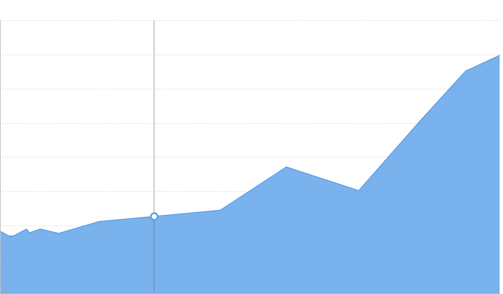
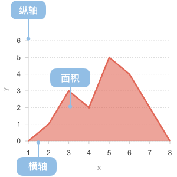

面积图
面积图的简介

面积图又叫区域图。
它是在折线图的基础之上形成的, 它将折线图中折线与自变量坐标轴之间的区域使用颜色或者纹理填充，这样一个填充区域我们叫做面积，颜色的填充可以更好的突出趋势信息，需要注意的是颜色要带有一定的透明度，透明度可以很好的帮助使用者观察不同序列之间的重叠关系，没有透明度的面积会导致不同序列之间相互遮盖减少可以被观察到的信息。
和折线图一样，面积图也用于强调数量随时间而变化的程度，也可用于引起人们对总值趋势的注意。他们最常用于表现趋势和关系,而不是传达特定的值。
面积图有两种常用的类型：
- 一般面积图：所有的数据都从相同的零轴开始。
- 层叠面积图：每一个数据集的起点不同，都是基于前一个数据集。用于显示每个数值所占大小随时间或类别变化的趋势线，堆叠起来的面积图在表现大数据的总量分量的变化情况时格外有用。另外还有百分比层叠面积图，用于显示每个数值所占百分比随时间或类别变化的趋势线。可强调每个系列的比例趋势线。
英文名：Area Graph
面积图的构成

| 图表类型 |
面积图 |
| 适合的数据 |
两个连续字段数据 |
| 功能 |
观察数据变化趋势 |
| 数据与图形的映射 |
两个连续字段分别映射到横轴和纵轴
|
| 适合的数据条数 |
暂无限制 |
面积图的应用场景
适合的场景
例子1：展示时间维度上变化的值。 例如在股票市场上，将股票(或指数)的逐日收市价使用去面积图来表示，用来展示股市大致上的趋势。下图展示了 ACME 这只股票在 2015 年 9 月份整个月的每日的价格走势。
var data= [
{"day": '2015/9/1', "share": 10},
{"day": '2015/9/2', "share": 12},
{"day": '2015/9/3', "share": 11},
{"day": '2015/9/4', "share": 15},
{"day": '2015/9/5', "share": 20},
{"day": '2015/9/6', "share": 22},
{"day": '2015/9/7', "share": 21},
{"day": '2015/9/8', "share": 25},
{"day": '2015/9/9', "share": 31},
{"day": '2015/9/10', "share": 32},
{"day": '2015/9/11', "share": 28},
{"day": '2015/9/12', "share": 29},
{"day": '2015/9/13', "share": 40},
{"day": '2015/9/14', "share": 41},
{"day": '2015/9/15', "share": 45},
{"day": '2015/9/16', "share": 50},
{"day": '2015/9/17', "share": 65},
{"day": '2015/9/18', "share": 45},
{"day": '2015/9/19', "share": 50},
{"day": '2015/9/20', "share": 51},
{"day": '2015/9/21', "share": 65},
{"day": '2015/9/22', "share": 60},
{"day": '2015/9/23', "share": 62},
{"day": '2015/9/24', "share": 65},
{"day": '2015/9/25', "share": 45},
{"day": '2015/9/26', "share": 55},
{"day": '2015/9/27', "share": 59},
{"day": '2015/9/28', "share": 52},
{"day": '2015/9/29', "share": 53},
{"day": '2015/9/30', "share": 40}
];
var Stat = G2.Stat;
var chart = new G2.Chart({
id: 'c1',
width: 800,
height: 350,
plotCfg: {
margin: [20, 85,80,80]
}
});
chart.source(data);
chart.col('day', {
type: 'timeCat',
tickCount: 10,
nice: false,
mask: 'yyyy/m/d',
alias: 'Year/Month/Day'
});
chart.col('share', {
alias: 'The Share Price',
formatter: function(val) {
return '$' + val;
}
});
chart.tooltip({
crosshairs: true
});
chart.area().position('day*share');
chart.line().position('day*share').size(2.5);
chart.render();
例子2：包含多组值。下图使用区域图展示了 1986 至 2005 年 ACME 和其竞争对手每年的股票价格对比。
var data= [
{"year": "1986", "ACME": 162, "Compitor": 42},
{"year": "1987", "ACME": 134, "Compitor": 54},
{"year": "1988", "ACME": 116, "Compitor": 26},
{"year": "1989", "ACME": 122, "Compitor": 32},
{"year": "1990", "ACME": 178, "Compitor": 68},
{"year": "1991", "ACME": 144, "Compitor": 54},
{"year": "1992", "ACME": 125, "Compitor": 35},
{"year": "1993", "ACME": 176, "Compitor": 66},
{"year": "1994", "ACME": 156},
{"year": "1995", "ACME": 195, "Compitor": 120},
{"year": "1996", "ACME": 215, "Compitor": 115},
{"year": "1997", "ACME": 176, "Compitor": 36},
{"year": "1998", "ACME": 167, "Compitor": 47},
{"year": "1999", "ACME": 142, "Compitor": 72},
{"year": "2000", "ACME": 117, "Compitor": 37},
{"year": "2001", "ACME": 113, "Compitor": 23},
{"year": "2002", "ACME": 132},
{"year": "2003", "ACME": 146, "Compitor": 46},
{"year": "2004", "ACME": 169, "Compitor": 59},
{"year": "2005", "ACME": 184, "Compitor": 44}
];
var Stat = G2.Stat;
var Frame = G2.Frame;
var frame = new Frame(data);
frame = Frame.combinColumns(frame,['ACME','Compitor'],'value','type','year');
var chart = new G2.Chart({
id: 'c11',
width: 800,
height: 350,
plotCfg: {
margin: [20, 85,80,80]
}
});
chart.source(frame);
chart.col('value', {
alias: 'The Share Price in Dollars',
formatter: function(val) {
return '$' + val;
}
});
chart.tooltip({
crosshairs: true
});
chart.area().position('year*value').color('type').shape('smooth');
chart.line().position('year*value').color('type').size(2.5).shape('smooth');
chart.render();
例子3：带有负值。下图显示的是某公司在 Florida、Texas、Nevada 三个城市 1996 年 至 2015 年的收益情况，通过垂直坐标轴的正负方向很形象得表现了公司的盈利亏损情况。
var data= [
{"Year": "1996", "Florida": 322, "Texas": 242, "Nevada": 162},
{"Year": "1997", "Florida": 324, "Texas": 254, "Nevada": 90},
{"Year": "1998", "Florida": 329, "Texas": 226, "Nevada": 50},
{"Year": "1999", "Florida": 342, "Texas": 232, "Nevada": 77},
{"Year": "2000", "Florida": 348, "Texas": 268, "Nevada": 35},
{"Year": "2001", "Florida": 334, "Texas": 254, "Nevada": -45},
{"Year": "2002", "Florida": 325, "Texas": 235, "Nevada": -88},
{"Year": "2003", "Florida": 316, "Texas": 266, "Nevada": -120},
{"Year": "2004", "Florida": 318, "Texas": 288, "Nevada": -156},
{"Year": "2005", "Florida": 330, "Texas": 220, "Nevada": -123},
{"Year": "2006", "Florida": 355, "Texas": 215, "Nevada": -88},
{"Year": "2007", "Florida": 366, "Texas": 236, "Nevada": -66},
{"Year": "2008", "Florida": 337, "Texas": 247, "Nevada": -45},
{"Year": "2009", "Florida": 352, "Texas": 172, "Nevada": -29},
{"Year": "2010", "Florida": 377, "Texas": 37, "Nevada":-45},
{"Year": "2011", "Florida": 383, "Texas": 23, "Nevada":-88},
{"Year": "2012", "Florida": 344, "Texas": 34, "Nevada":-132},
{"Year": "2013", "Florida": 366, "Texas": 46, "Nevada":-146},
{"Year": "2014", "Florida": 389, "Texas": 59, "Nevada":-169},
{"Year": "2015", "Florida": 334, "Texas": 44, "Nevada":-184}
];
var Stat = G2.Stat;
var Frame = G2.Frame;
var frame = new Frame(data);
frame = Frame.combinColumns(frame,['Florida','Texas','Nevada'],'Profit','City','Year');
var chart = new G2.Chart({
id: 'c22',
width: 800,
height: 350,
plotCfg: {
margin: [20, 85,80,80]
}
});
chart.source(frame);
chart.col('Profit', {
alias: 'Profit in Dollars',
formatter: function(val) {
return val + 'k';
}
});
chart.tooltip({
crosshairs: true
});
chart.area().position('Year*Profit').color('City');
chart.line().position('Year*Profit').color('City').size(2.5);
chart.render();
面积图与其他图表的对比
- 面积图和折线图都是展示时间或者连续数据上的趋势，折线图相互之间不进行遮盖，可以用于显示更多的记录。
- 面积图可以进行层叠，非常适合观察总量和分量的变化。
- 面积图主要展示时间或者连续数据上的趋势，柱状图主要展示的是分类数据的对比。
- 面积图和柱状图都可以进行层叠，都可以观察总量和分量的变化，观察各个分量的占比。
变型
标签
实现
G2